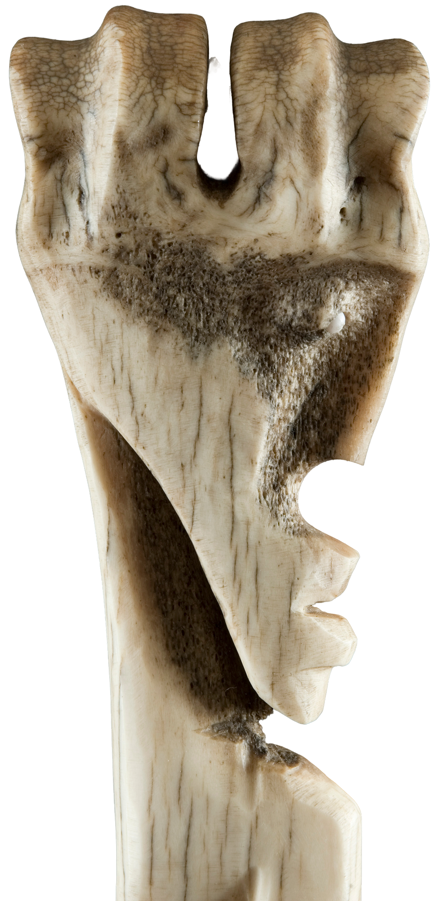
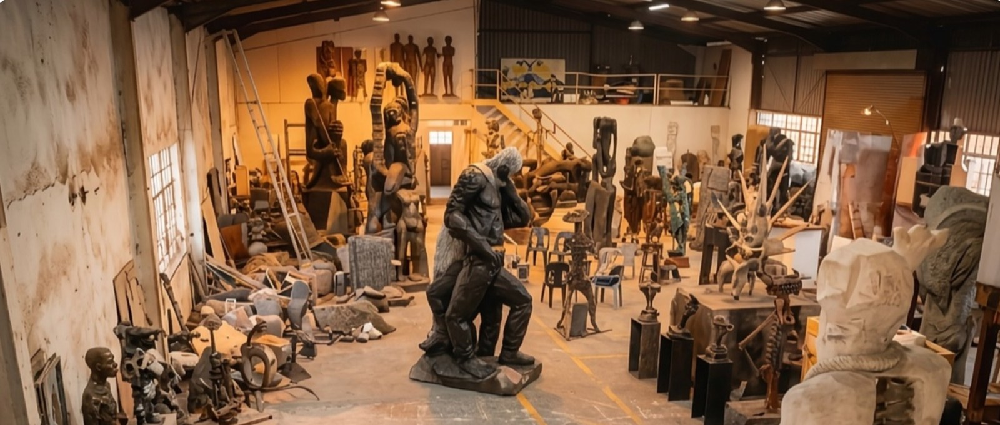
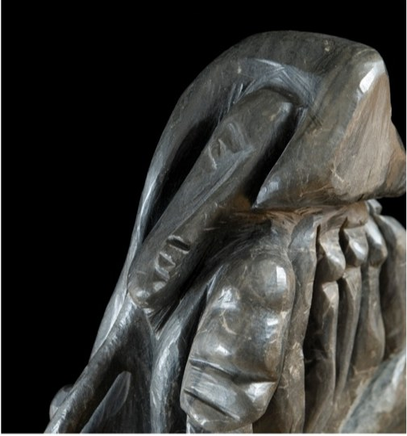
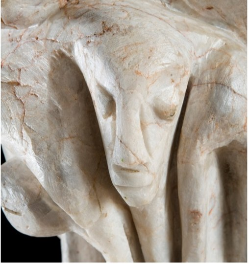
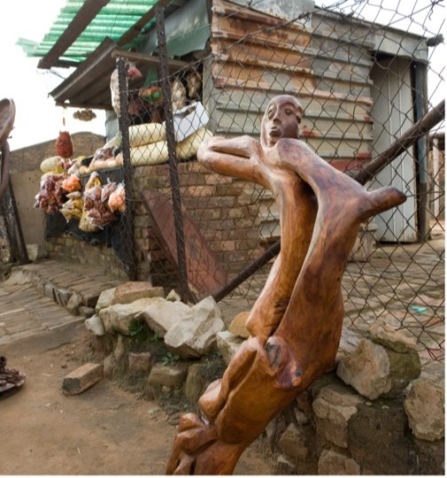

Living archives
ancestral voices
shared futures
Grounded in the philosophy of UBuSuSu, our work unfolds across the archive, studio, education, community, and global dialogue: intergenerational sites of living knowledge.
Explore our workThe Foundation
The purpose of the Ntuli Foundation is to deliver public benefit in the areas of culture, heritage, and education, ensuring that African philosophical, artistic, and spiritual knowledge systems are preserved, activated, and transmitted to future generations. All assets and activities of the Foundation are applied exclusively towards these objectives.

Four rooms,
one passage.
Intergenerational sites of living knowledge: held, activated, and handed on.
Living archives
Holding and activating African knowledge through preservation, digitisation, and publication.
Studio practice
Advancing artistic creation, mentorship, and intergenerational making.
Knowledge transmission
Education, research, fellowship, and institutional partnership.
Public & global recognition
Exhibitions, community engagement, and international cultural exchange.
Where the work lives.

Living archives
To preserve and digitise Professor Ntuli’s work, establishing the studio as a primary archival and pedagogical site.

Global culture reach
To position African philosophical and artistic knowledge within both continental and global cultural institutions and frameworks.

Studio as a living space
To activate the studio as a dynamic site for education, performance, and meaningful community engagement.
We do this work not as an institution keeping objects, but as a return.
Where lineage becomes living knowledge held, activated, and handed on.
This work belongs to all of us
Help carry it forward.
From bold concepts to early pilots, we support ideas with potential to scale across African communities, providing catalytic funding, strategic partnerships, and evidence-based learning.